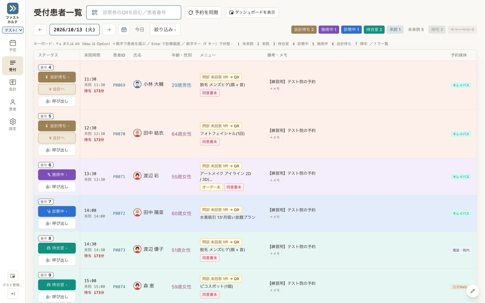
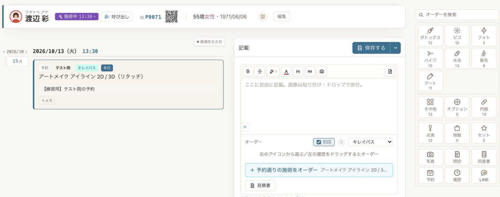
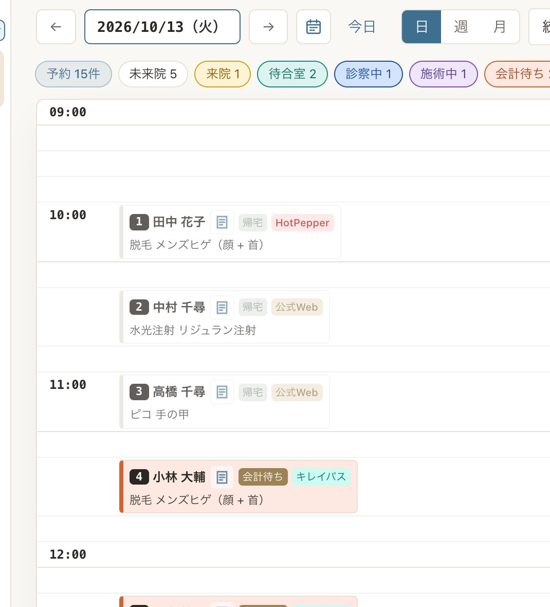
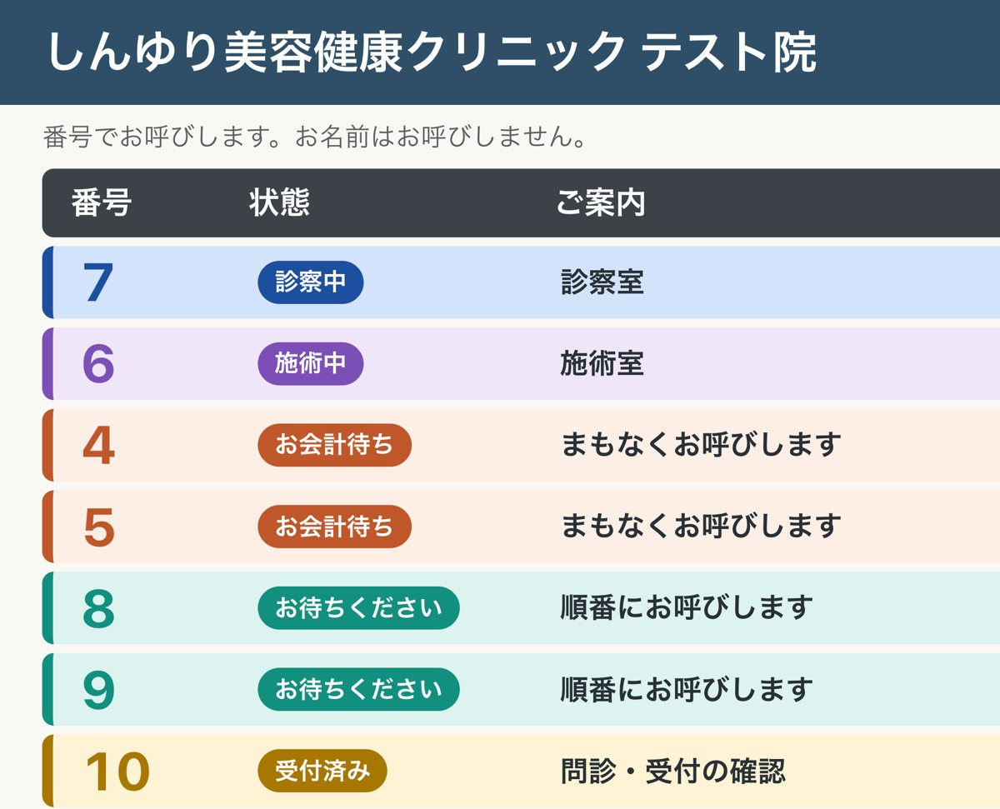
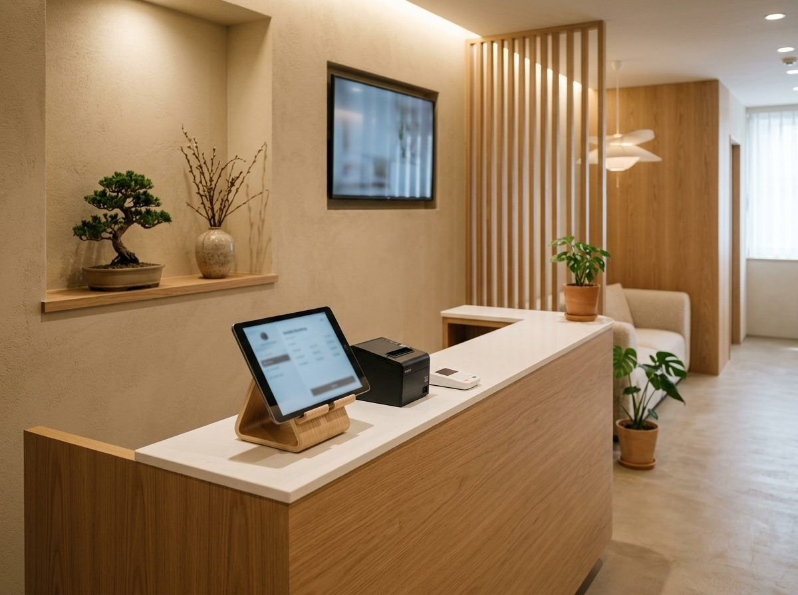

どれも、実際の院で困ったことがきっかけで入れた機能です。
ホットペッパーで入った予約を、キレイパスの枠でも閉じ忘れる。
3つの予約サイトの予約を自動で取り込み、埋まった枠はほかのサイトでも閉じます。院のHPからの24時間Web予約も、同じ台帳に入ります。
呼ばれても聞こえない、自分の番が分からない。
番号札に本人の診察券QRを印字。待合のモニターと音声で番号と部屋を案内し、スマホにも呼び出しが届きます。
「脱毛」を探すのに漢字変換で手が止まる。
「だつもう」と打てば脱毛のテンプレートが出ます。部位などはタップで選べるので、入力の手間が減ります。
高額なコースの説明で、紙の書類が何枚も行き来する。
タブレットで電子署名。見積書は組み合わせを3通り並べて提示し、特商法の書面やクーリングオフの期限も自動で出します。
新人がいきなり本番で操作するのは不安。
毎日15人の架空の患者が来る練習用の院を用意。矢印に沿って受付から会計まで練習でき、記録は7日で自動で消えます。
iPadのアプリから印刷ボタンを押しても反応しない。
その場でPDFにして共有シートを開く方式に。予定表・領収書・同意書の控えを、受付のiPadから直接印刷できます。

しんゆり美容健康クリニック 府中院
東京都府中市 2026年11月開院
開院準備の段階から導入し、予約・受付・番号札・呼び出し・カルテ・会計までをファストカルテで行います。受付のキー操作や待合の読み上げは、開院準備のなかでスタッフの声を聞いて加えたものです。
カルテを入れ替えなくても導入できます。いまお使いの電子カルテや予約システムはそのままで、必要な仕組みだけを追加することもご相談ください。
番号札の印刷、受付からの呼び出し、待合のモニターと音声の案内、患者のスマホへの通知。患者さんの名前を呼ばずにご案内できます。
ホットペッパー・キレイパス・トリビューの予約を1つの台帳に集め、空き状況を自動で合わせます。
タブレットでの署名と、来院前のスマホ問診。紙のスキャンや転記が要らなくなります。
ダッシュボード、院名入りの診察券アプリ、他のシステムとのつなぎ込みなど。
いまのシステムとのつなぎ方（予約データの取り込み、受付での入力など）は、院の環境を見てご提案します。費用は内容に合わせてお見積もりします。
決まった形に院を合わせるのではなく、カルテのほうを院に合わせます。受付や看護師、カウンセラーが「ここが使いにくい」と感じたところを、開発者の私が直接聞いて、画面や流れを作り変えます。
メーカーの窓口に要望を出して、何か月も待つ必要はありません。府中院の開院準備でも、スタッフの声を聞いたその週のうちに、受付のキー操作や呼び出しの読み上げを変えました。
定期的に院のスタッフと話し、困りごとを集めます。
画面の並び、入力欄、帳票、受付の流れなど。ほかの院向けの汎用機能にはしない調整も行います。
入れ替え作業や追加の導入費は不要です。
いまのカルテのまま一部だけを導入する場合は、別途お見積もりです。表示は1院あたり・税抜。最低契約6か月、年払いは10%引き、2院目からは半額。先着5院の半額は、利用開始から12か月間の月額に適用します（導入費は対象外）。システムの顧問や、医師が現場に入る業務改善は個別にご相談ください。
鈴木 雄哉医師／合同会社鈴木医工 代表
聖路加国際病院で初期研修を修了し、都立広尾病院で救急科・小児科を研修。現在は藤田医科大学 総合診療科の専攻医として診療しながら、しんゆり美容健康クリニックの院長を務めています。
ファストカルテは、院長として受付や診察室に立つなかで自分で作ってきたものです。導入のご相談にも、私が直接うかがいます。
自由診療専用です。保険診療をしている院は、いまのところ対象外です。
患者情報・予約・来院履歴は移せます。データ移行は50,000円からで、元のデータの形式を見て見積もります。
メニューと料金の登録、同意書・問診の取り込み、端末の設定、スタッフへの操作説明です。使い始めの1週間に出たご要望に合わせたカスタマイズも、無料で含まれます。
できます。いまのカルテや予約システムはそのままに、番号札・呼び出し・待合モニターだけを導入する方法をご提案します。つなぎ方は院の環境を見て決めます。
国内（東京）のクラウドに保存し、毎日バックアップを取ります。
カルテごと入れ替える場合も、番号札だけ入れたい場合も、いまの受付の流れに合うかどうかを一緒に確認します。
導入の相談をする